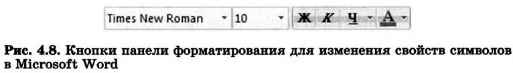
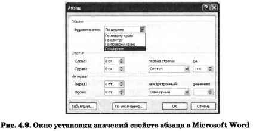
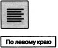
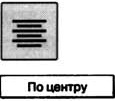
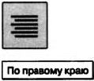
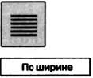
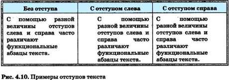
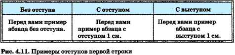
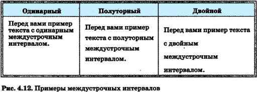
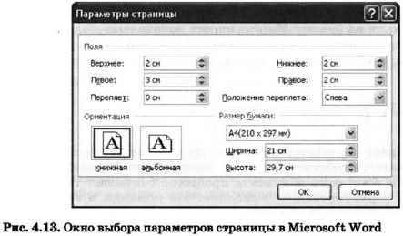

Ключевые слова:
- форматирование
- шрифт
- размер
- начертание
- абзац
- выравнивание
- отступ первой строки
- междустрочный интервал
- стиль
- параметры страницы
Прямое форматирование
4.3.1. Общие сведения о форматировании
Читая учебники и художественные произведения, просматривая газеты, журналы и другую печатную продукцию, вы могли обратить внимание на разнообразие способов оформления текста. Различные операции по приданию текстовому документу требуемого вида совершаются на этапе его форматирования.
Форматирование текста — процесс его оформления. Основная цель форматирования — сделать восприятие готового документа простым и приятным для читателя. В первую очередь это делается за счёт вычленения и одинакового оформления однотипных структурных элементов текста.
Оформляя документ, пользователь применяет к отдельным его элементам команды форматирования. Различают два способа форматирования текста:
- прямое форматирование;
- стилевое форматирование.
Прямое форматирование применяют к произвольным символьным фрагментам (отдельным символам, словам, строкам, предложениям) и абзацам. Рассмотрим эти случаи.
4.3.2. Форматирование символов
Символ — минимальная графическая единица текста. К основным свойствам символов можно отнести: шрифт, размер шрифта, начертание и цвет.
Форматирование символов — изменение значений свойств символов (символьных структурных элементов).
Шрифт — это выполненные в едином стиле изображения символов, используемых для письма. Человеку, занимающемуся подготовкой текстов на компьютере, доступны тысячи различных шрифтов. Все их можно разделить на четыре основные группы: шрифты с засечками, рубленые, каллиграфические (рукописные) и декоративные.
Если присмотреться к тексту этого параграфа, то можно заметить, что на концах букв имеются маленькие чёрточки — засечки. При чтении за них «цепляется» глаз. Засечки облегчают зрительное восприятие букв, а значит, процесс чтения. Шрифты с засечками, как правило, применяются в книгах, учебниках и других изданиях с большой длиной строки.
В журналах и газетах, где текст располагается в несколько колонок, а также для заголовков (короткие строки) применяют рублевые шрифты. Например, в вашем учебнике рубленым шрифтом набраны названия параграфов.
Каллиграфические шрифты имитируют почерк человека. Декоративные весьма причудливы и абсолютно не похожи друг на друга. Каллиграфические и декоративные шрифты используются для оформления обложек, открыток, этикеток, плакатов, рекламных проспектов и тому подобной печатной продукции.
Важно помнить, что употребление более 2-3 шрифтов в одном документе затрудняет его восприятие. Особенно осторожно следует подходить к использованию шрифтов двух последних групп.
Размер (кегль) шрифта — высота шрифта, измеряемая от нижнего края самой низкой буквы (например, «р» или «у») до верхнего края самой высокой буквы (например, «б»). Кегль измеряется в пунктах. Один пункт — это очень маленькая единица, равная 1/72 дюйма (приблизительно 0,35 мм), т. е. шрифт в 72 пункта имеет высоту в 1 дюйм. В вашем учебнике используется шрифт размером 10,5 пункта.
Чаще всего используют следующий набор начертаний символов: нормальное (неизменённый шрифт), полужирное (несколько толще остальных символов), курсивное (наклонённое), подчёркнутое, перечёркнутое, контурное (только контур символа), верхний индекс (несколько выше и мельче остальных символов), нижний индекс (несколько ниже и мельче остальных символов).
Под каждый символ отводится прямоугольная область, в которой размещается рисунок символа. Цвет символа — цвет видимой части символа (его рисунка). Цвет подложки символа — цвет прямоугольной области, отводимой под символ, не занятой его рисунком.
Значения свойств символов выбираются с помощью кнопок панели форматирования (рис. 4.8).
4.3.3. Форматирование абзацев
Абзац — это часть документа между двумя соседними непечатаемыми (не отображаемыми без специальной команды) управляющими символами конца абзаца.
Процесс ввода абзаца заканчивается нажатием клавиши Enter (тем самым вводится символ конца абзаца). К основным свойствам абзаца можно отнести: выравнивание, отступ первой строки, междустрочный интервал, отступы слева и справа, интервалы перед и после (рис. 4.9).
Выравнивание абзаца — расположение абзаца относительно боковых границ страницы.
Когда текст выровнен по левому краю, левая граница абзаца образует прямую линию. При этом все строки имеют одинаковые отступы от левого края страницы. Данный абзац выровнен по левому краю.
Выровненный по центру, или центрированный, текст располагается так: с обеих сторон каждой строки ширина свободного пространства одинакова. С обеих сторон края абзаца получаются неровными. Данный абзац выровнен по центру.
Когда текст выровнен по правому краю, правая граница абзаца образует прямую линию. Каждая строка абзаца заканчивается на одном и том же расстоянии от правого края страницы. Данный абзац выровнен по правому краю.
У текста, выровненного по ширине, левая и правая границы образуют прямые линии. При этом последняя строка абзаца ведёт себя так, как при выравнивании по левому краю. Данный абзац выровнен по ширине.
Отступ слева (справа) — расстояние от края страницы до левой (и, соответственно, правой) границы абзаца (рис. 4.10).
Отступ первой строки — отступ перед первой строкой абзаца, красная строка (рис. 4.11).
Интервалы перед и после задают расстояние между соседними абзацами соответственно сверху и снизу, в пунктах.
Междустрочный интервал определяет расстояние между соседними строками внутри абзаца. Чаще всего используются одинарный, полуторный и двойной интервалы (рис. 4.12).
4.3.4. Стилевое форматирование
Небольшие документы можно оформить прямым форматированием. При работе с большими текстами, как правило, применяют стилевое форматирование. Смысл этой операции заключается в том, что структурным элементам, несущим одну и ту же функциональную нагрузку (например, заголовкам одного уровня, основному тексту, примерам и т. д.), назначается определённый стиль форматирования — набор параметров форматирования (шрифт, его начертание и размер, отступ первой строки, междустрочный интервал и др.).
Современные текстовые процессоры позволяют автоматически создавать оглавления документов, в которых к заголовкам разделов разных уровней применено стилевое форматирование: с помощью специальной команды пользователь указывает, заголовки каких уровней следует включить в оглавление; копии абзацев указанных стилей автоматически выбираются из текста документа и помещаются с указанием номеров страниц, с которых они были взяты, в новый раздел «Оглавление».
Стилевое форматирование имеет ряд преимуществ перед прямым:
- экономит время — применить стиль как набор параметров форматирования значительно быстрее, чем задавать соответствующие параметры один за другим;
- обеспечивает единообразие в оформлении текстового документа — при прямом форматировании одинаковые по функциональному назначению структурные элементы могут отличаться своими форматами; применение определённого стиля вносит строгость в оформление документа;
- позволяет быстро изменить вид отдельных элементов во всём документе — достаточно внести изменения в стиль, и оформление будет изменено во всём документе.
Можно создавать собственные стили или пользоваться готовыми стилями, имеющимися в текстовом процессоре. На основе определённых стилей создаются шаблоны типовых документов — буклетов, грамот, визитных карточек, счетов, резюме, деловых писем, отчётов и т. д. Пользователю достаточно ввести свою информацию в отдельные блоки шаблона, и она автоматически приобретёт заранее заданное оформление.
4.3.5. Форматирование страниц документа
При оформлении текстового документа, предназначенного для печати, особое внимание следует уделить его расположению на листах бумаги.
В большинстве случаев используется бумага размера А4 (210 х 297 мм). Пользователь может выбрать ориентацию листа бумаги (рис. 4.13):
- книжную — высота листа больше его ширины;
- альбомную — ширина листа больше его высоты.
Текст документа размещается на странице в области печати, ограниченной полями. Поля представляют собой пустое пространство по краям страницы. Различают верхнее, нижнее, левое и правое поля. Па полях размещают номера страниц, а также колонтитулы. Колонтитул — вспомогательная информация, которая выводится на каждой странице документа. Например, в вашем учебнике в качестве верхнего колонтитула выводится название главы и параграфа.
Возможно, вам уже приходилось готовить рефераты по какому-нибудь предмету. Наверняка вы будете их писать в дальнейшем. Ниже приведены основные требования к оформлению реферата.
Реферат должен быть выполнен на одной стороне листов белой бумаги формата А4 (210 х 297 мм).
Размеры полей страницы (не менее):
- левое — 30 мм,
- верхнее, нижнее, правое по 15 — 20 мм.
Отступ первой строки абзаца: 8-12 мм, одинаковый по всему тексту.
Интервал междустрочный: полуторный.
Выравнивание абзаца: по ширине.
Гарнитура шрифта основного текста — Times New Roman или аналогичная.
Кегль (размер): 12-14 пунктов.
Цвет шрифта: чёрный.
Заголовки разделов и подразделов следует размещать на отдельной строке с прописной буквы без точки в конце, не подчёркивая. Выравнивание по центру или по левому краю. Интервал: перед заголовком — 12 пунктов, после — 6 пунктов.
Страницы следует нумеровать арабскими цифрами, соблюдая сквозную нумерацию по всему тексту (титульный лист и оглавление включают в общую нумерацию). На титульном листе номер не проставляют.
В верхней части титульного листа пишется, в каком образовательном учреждении выполняется работа, далее буквами увеличенного кегля указывается тип («Реферат») и тема работы, ниже в правой половине листа — информация о тех, кто выполнил и кто проверяет работу. В центре нижней части титульного листа пишется название населённого пункта и год выполнения работы.
(По материалам Российского общеобразовательного портала http://www.school.edu.ru)
Сегодня далеко не все документы* подготовленные на компьютере, печатаются на бумаге. Многие из-них изначально создаются, например, для размещения на web-сайтах. О том, что нужно учитывать при оформлении таких документов, мы поговорим более подробно в 9 классе.
4.3.6. Сохранение документа в различных текстовых форматах
При сохранении текстового документа в файле на внешнем носителе сохраняется собственно текст и команды его форматирования. При чтении текстового документа процессор считывает текст и команды его форматирования, выполняет эти команды и выводит на экран отформатированный текст.
Наиболее распространены следующие форматы файлов, в которых сохраняют текстовые документы:
- TXT — сохраняет текст без форматирования, в текст вставляются только управляющие символы конца абзаца;
- DOC — собственный формат документов Microsoft Word;
- ODT — собственный формат документов OpenOffice.org Writer;
- RTF — универсальный формат, сохраняющий всё форматирование; преобразует управляющие коды в текстовые команды, которые могут быть прочитаны и интерпретированы, многими приложениями; по сравнению с другими форматами имеет достаточно большой информационный объём;
- HTML — формат, используемый для хранения web-страниц;
- PDF — формат, предназначенный для представления в электронном виде печатных документов; обеспечивает корректное отображение документа независимо от операционной системы; сохранение в этом формате предусмотрено в OpenOffice.org и Microsoft Office 2007.
САМОЕ ГЛАВНОЕ
Форматирование текста — процесс его оформления. Основная цель форматирования — сделать восприятие готового документа простым и приятным для читателя за счёт вычленения и одинакового оформления однотипных структурных элементов текста. Различают два способа форматирования текста: прямое форматирование; стилевое форматирование.
Форматирование символов — изменение значений свойств введённых символов: рисунка (шрифта), размера, начертания, цвета и т. д.
Форматирование абзаца — изменение таких его свойств, как выравнивание, отступ первой строки, междустрочный интервал, отступы слева и справа, интервалы перед и после и др.7
Основными параметрами страницы документа являются размер бумаги, ориентация страницы и размер полей.
Наиболее распространены следующие форматы файлов, в которых сохраняют текстовые документы: TXT, DOC, ODT, RTF, HTML, PDF.